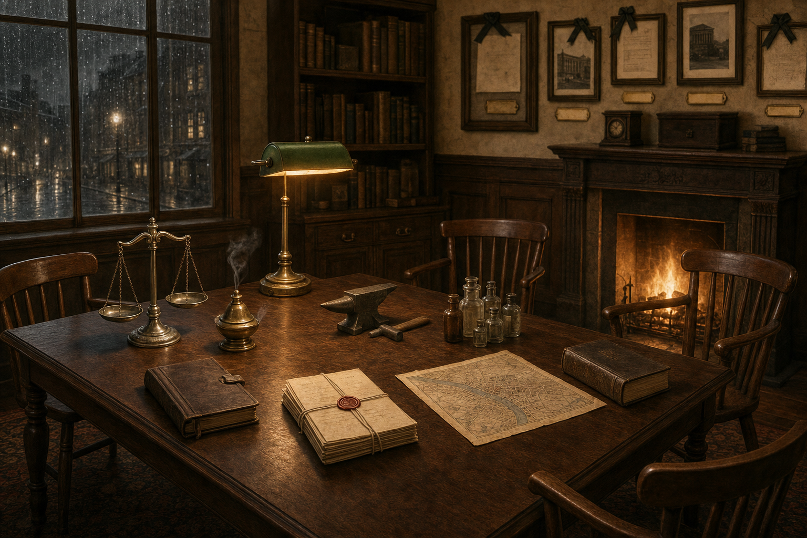
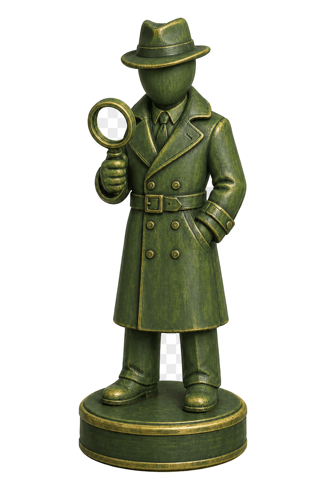
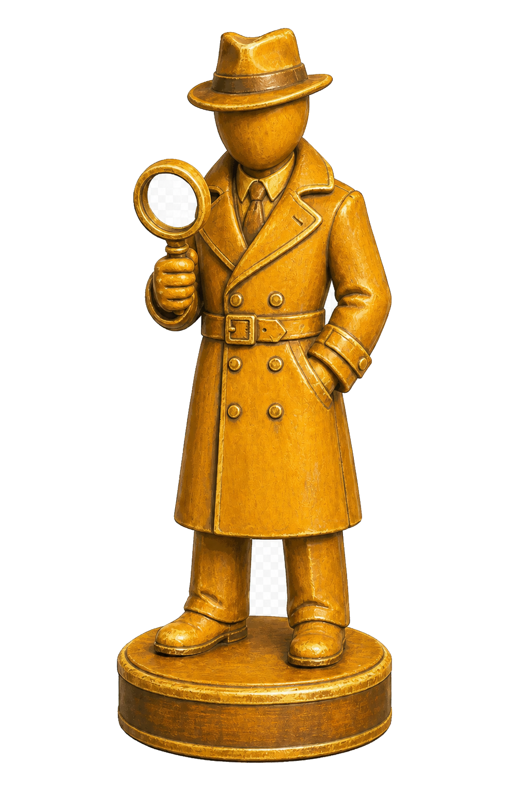
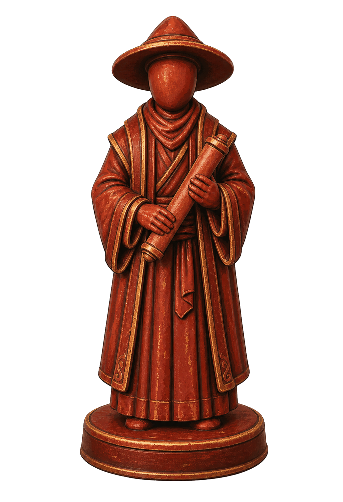
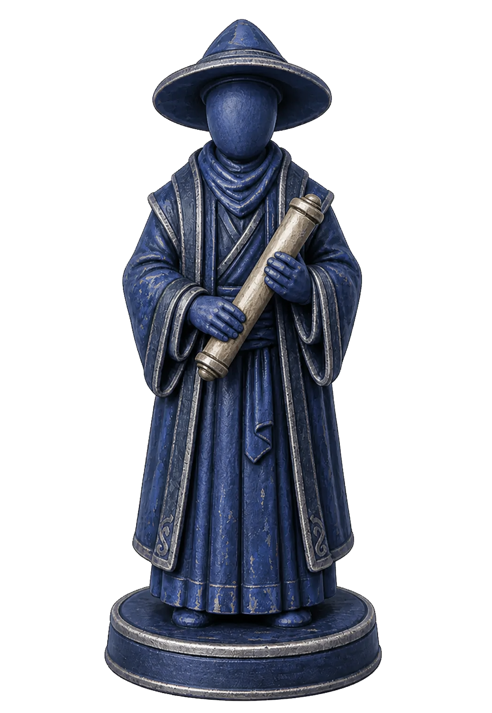
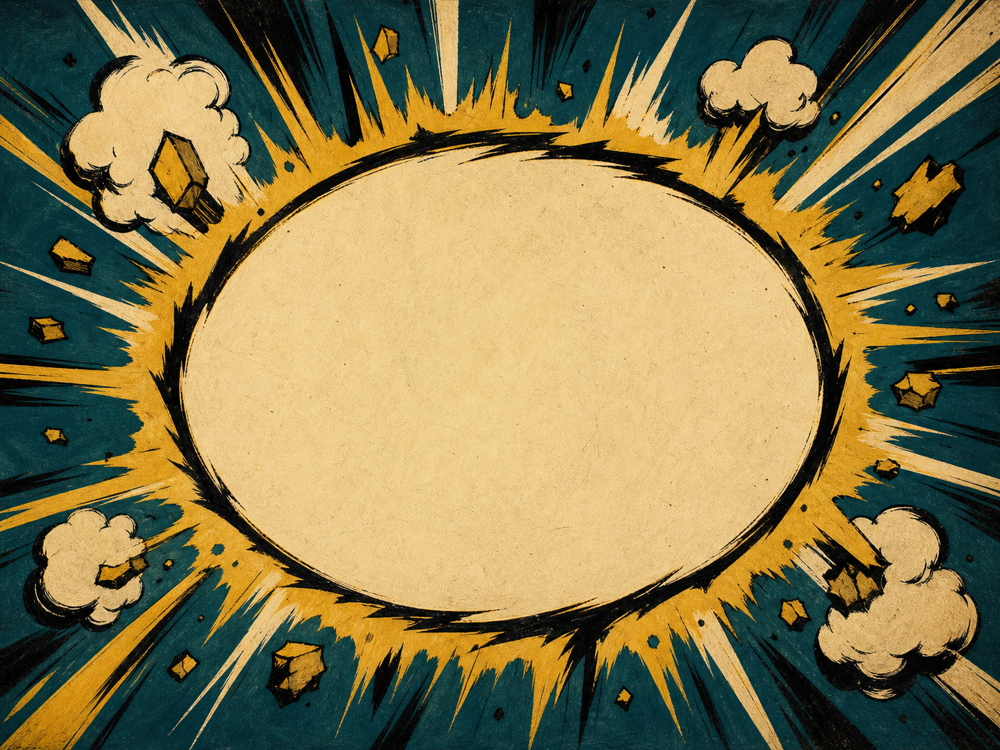
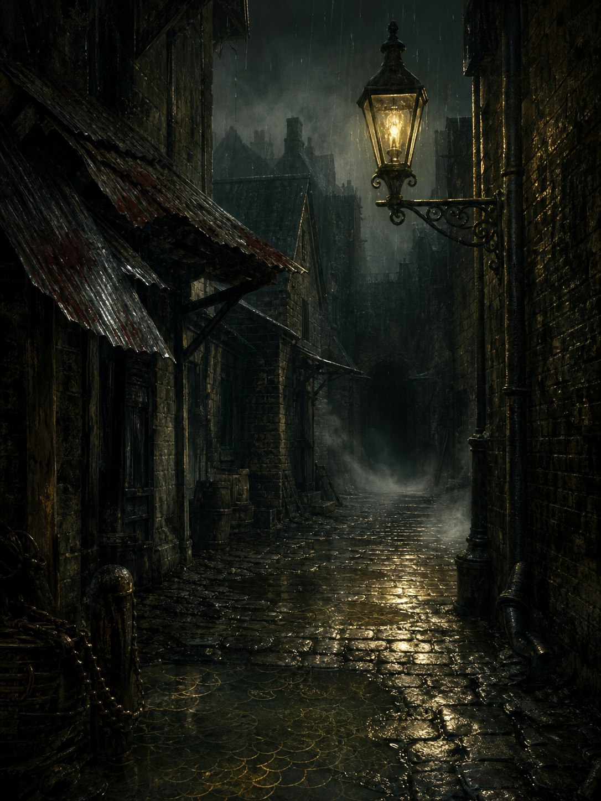
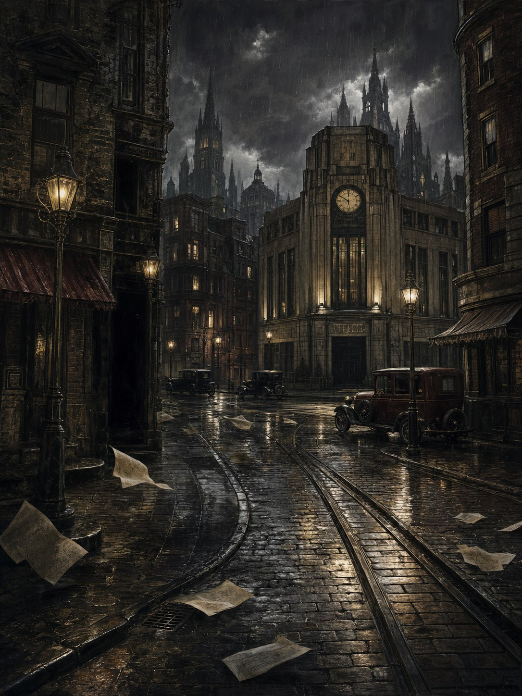

密斯卡塔尼克大學圖書館

ART-CALIBRATION 26071308｜僅供方向裁定，尚未接入遊戲本體
四張空椅、八個桌面入口物件、窗／桌燈／壁爐三光源；無人物、無具象肖像。

同一職業只換表面塗裝，不改輪廓；此批用私家偵探與先知測試差異辨識。
 私家偵探｜赤褐 #A04830私家偵探｜靛藍 #3A4A78
私家偵探｜赤褐 #A04830私家偵探｜靛藍 #3A4A78
私家偵探｜苔綠 #5A6E3A
私家偵探｜藏紅 #B07828
先知｜赤褐 #A04830
先知｜靛藍 #3A4A78 先知｜苔綠 #5A6E3A
先知｜苔綠 #5A6E3A 先知｜藏紅 #B07828P1 偵探P2 偵探P3 先知P4 先知
先知｜藏紅 #B07828P1 偵探P2 偵探P3 先知P4 先知Imagegen 只產生無字底卡，繁體中文字由介面精確疊上，避免模型產生錯字。
 轟！
轟！
碰！棋子是地點圖片內的獨立圖層；下方同時放入字卡與書房縮圖，檢查三種素材並置時的視覺關係。


轟！